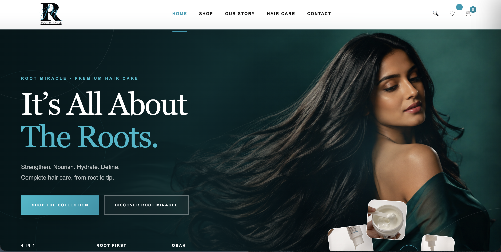
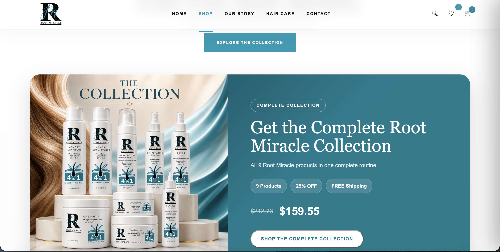
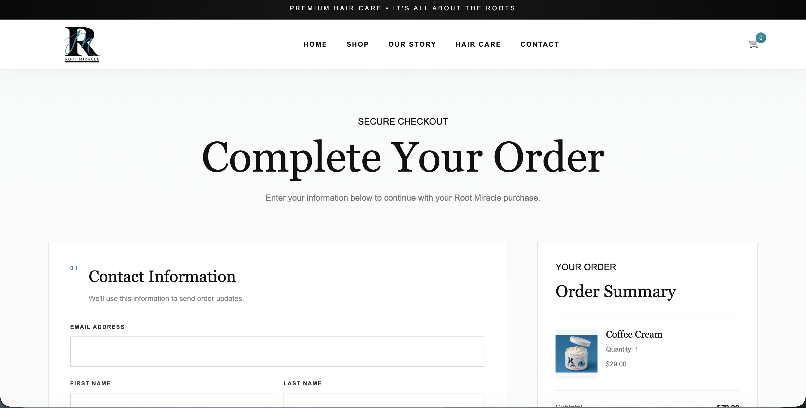
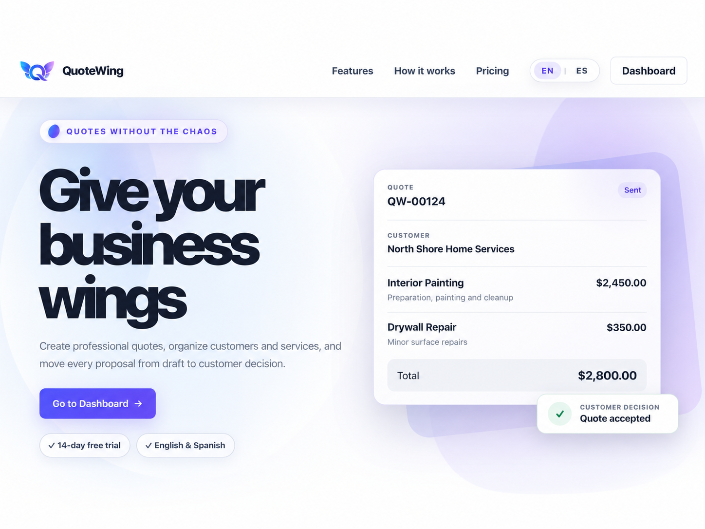
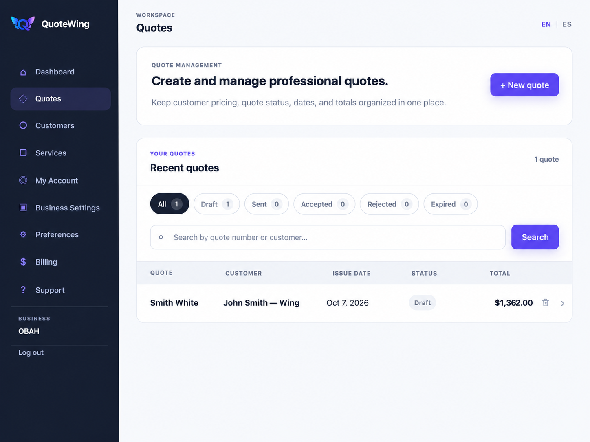
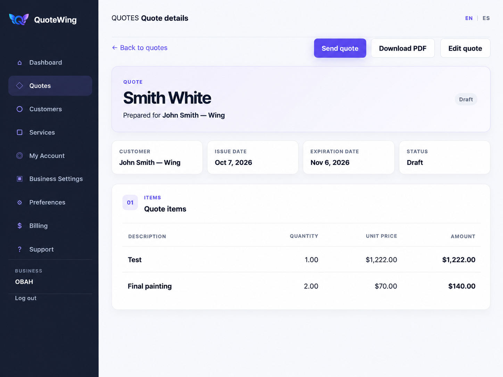

Problem Solving
Investigating technical issues and identifying practical solutions.
I solve technical problems through software, data, troubleshooting, and continuous learning. I build practical digital solutions and enjoy understanding how systems work, identifying issues, and improving user experiences.
I am a technology professional with hands-on experience in software development, web applications, data analysis, and technical problem-solving.
I enjoy understanding how systems work, identifying issues, and creating practical solutions that improve processes and user experiences.
My background in psychology also strengthens the way I approach technology through communication, observation, analytical thinking, and attention to detail.
Investigating technical issues and identifying practical solutions.
Building applications and digital solutions using modern technologies.
Combining technology with clear communication and a strong customer-support mindset.

Create a complete online shopping experience for a professional hair-care brand, combining product discovery, secure checkout, shipping, order management, and customer communication.
I designed and developed a responsive e-commerce experience with product catalog functionality, shopping cart, Stripe checkout, FedEx shipping integration, tracking, and automated customer notifications.



Service businesses need a faster and more professional way to create, send, organize, and track customer quotes without relying on fragmented tools or manual workflows.
I built a Django-based SaaS platform where businesses can manage customers and services, create professional quotes, generate PDFs, send proposals, track quote status, and manage customer decisions from one workspace.


Full-stack eCommerce application with vendors, buyers, authentication, product management, reviews, shopping cart functionality, and REST API integration.
Django publishing platform featuring role-based authentication, editorial workflows, newsletters, subscriptions, article approvals, and REST API integration.
Django notes application demonstrating CRUD functionality, templates, URL routing, form handling, and SQLite database integration.
My technical foundation combines software development, data analysis, integrations, and hands-on troubleshooting.
Building web applications, business workflows, and practical software solutions.
Working with structured data, analysis workflows, databases, and machine-learning fundamentals.
Connecting applications with external services, deployment tools, and production workflows.
Investigating issues, testing systems, documenting solutions, and supporting users.
I am especially interested in roles where I can combine technical problem-solving, software, data, and user support.
Troubleshoot technical issues, investigate root causes, document solutions, and support users with clear communication.
Build and maintain web applications, backend workflows, APIs, and practical digital tools.
Work with data, databases, reporting workflows, and analytical problem-solving to support decisions.
Support software rollouts, integrations, testing, documentation, workflows, and day-to-day technical operations.
I’m open to opportunities in technical support, software development, data, and implementation-focused roles.